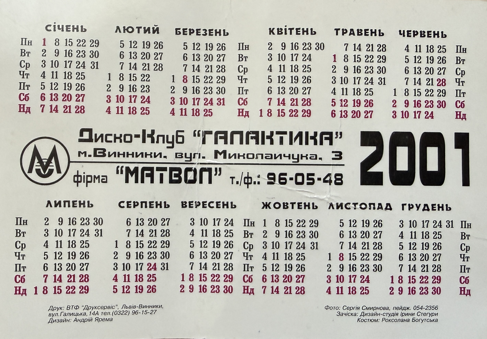

Uliana Latyk Pocket Calendar (2001)

Basic Information
| Title | Uliana Latyk Pocket Calendar |
| Material Type | Promotional Pocket Calendar |
| Featured Artist | Uliana Latyk |
| Year | 2001 |
| Language | Ukrainian |
Description
This promotional pocket calendar features Uliana Latyk, who now performs under the stage name Ana Danch. Issued for the year 2001, it represents one of the earliest surviving promotional materials documenting an early stage of her artistic career. The front side features a portrait photograph of the artist together with her name, while the reverse side presents the 2001 calendar and promotional information for Disco Club "Halaktyka" in Vynnyky and the company "MATVOL".
Archive Information
| Archive Category | Promotional Material |
| Original Name | Uliana Latyk |
| Current Stage Name | Ana Danch |
| Archive Reference | Pocket Calendar (2001) |
| Country | Ukraine |
Credits
| Photograph | Serhii Smyrnov |
| Hair Styling | Design Studio of Iryna Stehura |
| Costume | Roksolana Bohutska |
| Design | Andrii Yarema |
| Printing | VTF "Drukservis", Lviv–Vynnyky |
Source Information
| Company | MATVOL |
| Issued For | Disco Club "Halaktyka" |
| Location | Vynnyky, Mykolaichuka Street, 3, Ukraine |
| Telephone / Fax | 96-05-48 |
Archive Materials
Front side of the original promotional pocket calendar.

Reverse side containing the 2001 calendar and promotional information.
Notes
The original item has been preserved in its original condition and shows natural signs of age, including minor folds and surface wear. It is archived as one of the earliest surviving promotional materials documenting the artistic career of Uliana Latyk before adopting the stage name Ana Danch.